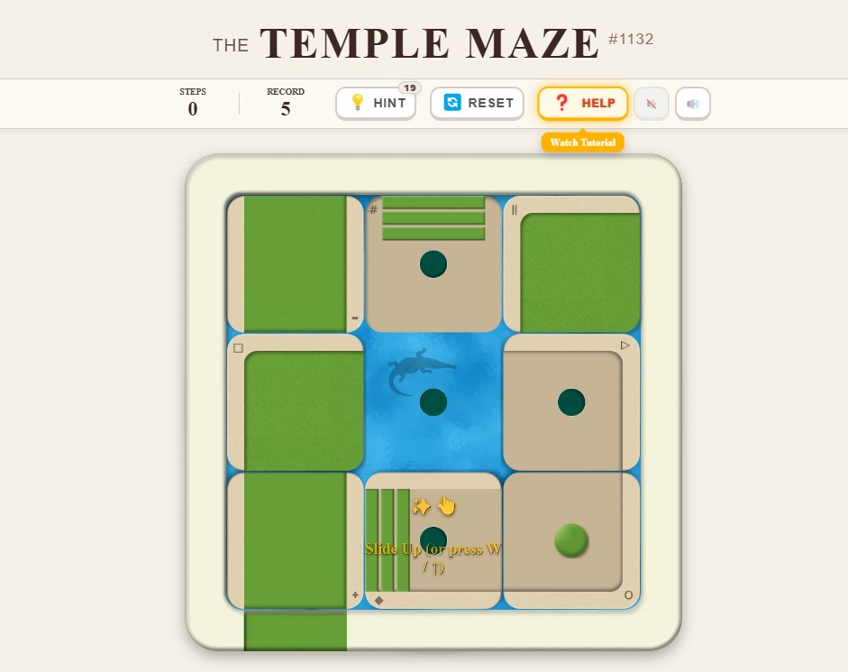
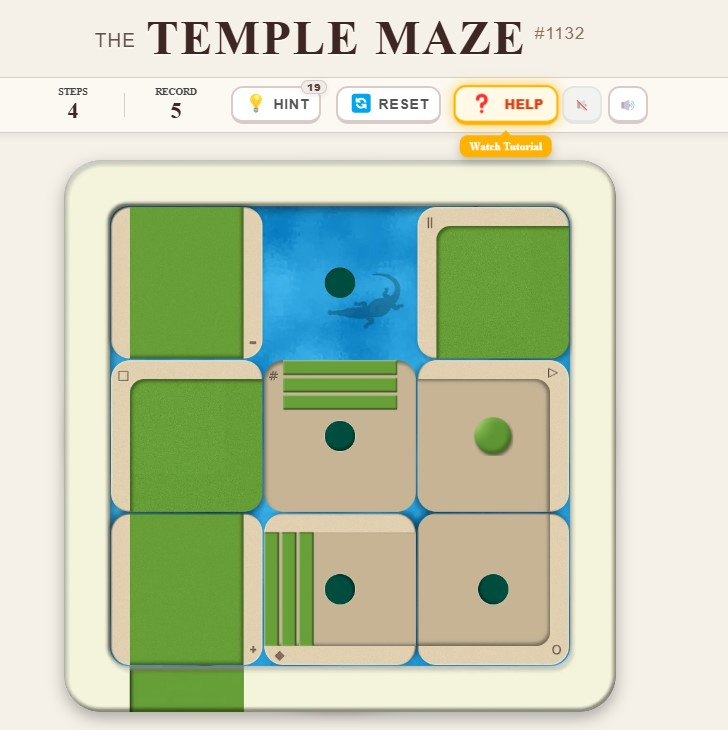

Klotski Puzzle is one of the most popular sliding puzzle games ever created. Although the rules are simple, the challenge comes from finding the right sequence of moves within a limited space. Players must carefully move blocks to guide the main piece toward the exit.
For decades, Klotski has fascinated puzzle lovers because easy-looking puzzles can hide surprisingly difficult solutions. Whether you are a beginner or an experienced puzzle fan, Klotski remains one of the best brain teasers available.
Try Temple Maze, a modern 3D Klotski-inspired sliding puzzle game playable directly in your browser.
A Klotski puzzle is a type of sliding puzzle where blocks move horizontally and vertically within a fixed board. Players cannot rotate or remove pieces. Instead, they must use the available empty spaces strategically to reposition the blocks.
The objective is normally to move a special target block to a designated exit. Although this sounds straightforward, solving a Klotski puzzle often requires many carefully planned moves.
Klotski has been enjoyed in various forms around the world for many decades. The puzzle became popular because it combines simple rules with deep strategic thinking. Physical wooden versions were common long before computerized versions appeared.
Today, Klotski puzzles can be played online through websites, mobile apps, and browser games, making the classic challenge more accessible than ever.
A sliding puzzle challenges players to rearrange pieces by moving them within a limited area. Every move changes the layout of the board and influences future possibilities.
Unlike action games that reward fast reactions, sliding puzzles reward planning, observation, and logical thinking. The best solutions often require looking several moves ahead.
Many beginners immediately focus on moving the target block toward the exit. Unfortunately, this approach often results in dead ends.
Successful Klotski solving usually requires temporarily moving pieces away from the goal. Players must create space before progress becomes possible. This idea makes Klotski puzzle solving surprisingly difficult compared with other puzzle games.
The challenge comes not only from finding a solution but from recognizing the correct sequence of moves among many possible options.
These mistakes are extremely common and can make even easy puzzles feel much harder than they actually are.

One fascinating aspect of Klotski puzzles is that many players become stuck on what appears to be a very simple level.
During testing of Temple Maze, a modern Klotski-inspired game, some players became trapped on the first level despite the solution requiring only a handful of moves.
This happens because people naturally search for direct routes. When a puzzle requires a temporary detour, the correct solution can easily be overlooked.
As a result, the perceived difficulty of a puzzle often depends more on the player's thought process than on the number of moves required.
While testing Temple Maze, I noticed something surprising. Many players became stuck not because the puzzle was objectively difficult, but because they misunderstood the rules or applied the wrong mental model.
Watching real players revealed several recurring patterns that were not obvious during development.
One unexpected observation was that some players would make the wrong move immediately, even when the correct move was clearly demonstrated through tutorial guidance and visual gestures.
The problem was not that the instruction was hidden. Instead, players often formed their own plan before fully processing the tutorial.
Once the very first move was performed incorrectly, the rest of the guidance became much less useful because the tutorial sequence was designed as a chain of connected actions. A mistake on step one could invalidate the intended learning path entirely.
Many beginners approach each puzzle as a unique challenge. More experienced players gradually learn reusable movement patterns.
One important example is the ability to exchange the positions of two blocks. Although every level looks different, the same structural patterns appear repeatedly.
After recognizing these patterns, players stop solving individual puzzles and begin solving categories of puzzles. The challenge becomes much easier because familiar situations can be recognized instantly.
In many ways, mastering Klotski is less about memorizing solutions and more about learning a vocabulary of movement patterns.
Temple Maze introduces a two-floor system connected by stairways. During testing, many players assumed that if a location could be reached, it must also be a valid place to stop.
However, the game's rules work differently.
The upper floor is primarily designed as a transition layer rather than a resting layer. Players can move through it, but in most situations they cannot stop there. The main exception occurs during the final exit sequence, where reaching the upper floor immediately completes the puzzle.
As a result, some players attempt to move onto the second floor and pause there. The move fails even though the path itself appeared valid.
The mistake is understandable because many games teach players that movement and stopping are governed by the same rules. Temple Maze separates these concepts.
The biggest lesson from observing players is that they naturally focus on the destination rather than the space surrounding it.
Players try to move directly toward the exit, while successful solutions often require temporarily moving away from the goal, creating space, and preparing future moves.
In other words, the challenge of a Klotski puzzle is usually not finding the exit. The challenge is understanding how the puzzle wants you to think.
New players can improve dramatically by following a few basic principles:
Experienced players understand that creating opportunities is often more important than making immediate progress.
Klotski combines logical thinking, planning, spatial awareness, and problem-solving skills within a very simple set of rules.
Because of this combination, Klotski remains one of the most respected brain teasers and sliding puzzle games in the world.
The puzzle offers a rewarding challenge that continues to attract both casual players and dedicated puzzle enthusiasts.
Yes. Klotski is one of the most famous examples of a sliding puzzle game.
The rules are simple, but advanced puzzles often require careful planning and creative thinking.
Most players get stuck because they focus too much on direct progress and not enough on creating space for future moves.
Yes. Modern browser versions make it easy to enjoy Klotski without downloading any software.
Klotski helps develop logical thinking, spatial reasoning, planning, and problem-solving skills.